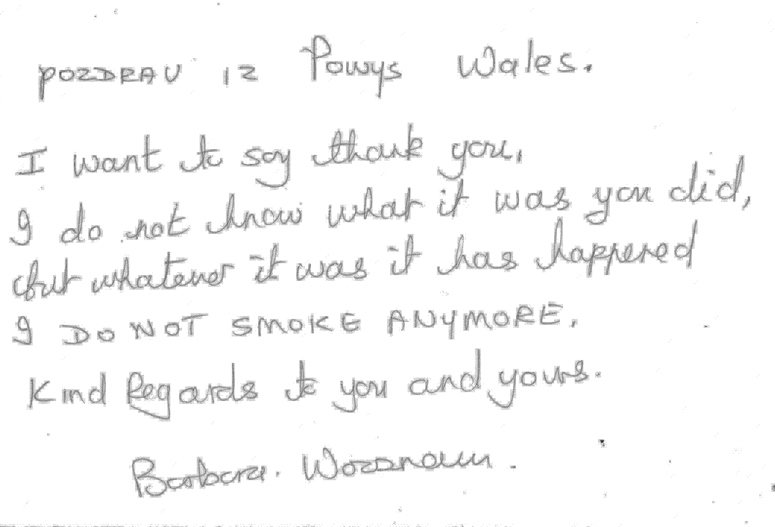

|
|
|

HYPNOSIS CENTER RAUSCH
P. PRERADOVIĆA 21
42 000 VARAŽDIN
CROATIA, phone number 00385 91 529 2547
What is hypnosis?
Hypnosis is as old as mankind. The ancient Sumerians, people with the oldest culture in the
world, used hypnosis in the way it is used today. When people speak about hypnosis they
often speak about sleeping (state of sleeping), although hypnosis is in no way connected to
normal, everyday sleeping. However, it is true that it is a state where we are neither
awake, nor sleeping. It is a state of partially active consciousness which enables us a
direct contact with our subconscious mind. A hypnotist with his suggestions induces a
patient into a state similar to sleeping, which temporarily changes the state of
consciousness, memory and physical reactions.
All suggestions that could drastically alter someone’s personality are excluded.
How do we experience hypnosis?
A lot of people get excited or scared when hypnosis is mentioned. They do not know what is
going to happen, or what they are expected to do. Some are almost disappointed, after having
been hypnotised, as they think they haven’t experienced anything special.
Why is it so?
When we sleep we experience hypnotic states – the stage between falling asleep and dreaming.
Thus we are already familiar with this state and it does not represent anything new to us.
Everyone who drives a car has experienced such a state. You drive somewhere, your thoughts
far away, and don’t even remember seeing the familiar landmarks or how you got to your
destination. We have lived through a hypnotic state with a time loss. The same can be
experienced when we become involved in a book or watch a film intensely. Everything else is
blocked out. A hypnotic state can be experienced everywhere and we should not be afraid of
it.
Different levels of depth can be achieved, all depending on the purpose of hypnosis. For
example, with losing weight or stopping smoking a light or medium hypnosis is enough. On the
other hand, people getting ready to undergo a surgery will need deep hypnosis.
Consciousness in different levels of hypnotic state:
Waking state - our conscious mind is completely present and filters
extraneous stimuli. We accept only what’s important to us.
- Light hypnosis - our conscious mind is already limited. A person being
hypnotised concentrates on one point, but is still aware of everything. However, access to
the consciousness is already possible.
- Medium trance - conscious mind is already almost completely limited.
Suggestions are well accepted. Simple orders given by the hypnotist are accepted, although
the conscious mind still filters them.
- Deep trance – conscious mind is almost completely shut off, and the
subconscious has almost no power of reasoning. Visual and auditive hallucinations, known
from different show programmes, are possible at this stage. Complete conscious amnesia
(memory loss) is also possible. Suggestions that are against someone’s morals, ethics, code
beliefs, or desires are not possible and will simply be rejected by the subconscious. About
one third of participants reached this stage at the shortest possible time. The other two
thirds need deeper levels or more preparation to be able to reach this deep state of trance.
Can I get stuck in hypnosis?
If, by any chance, left in hypnosis the hypnotised person would naturally wake up and return
to a conscious state. So there is no danger that you can get stuck in hypnosis.
Why healing hypnosis?
We live in the world of technological development and great changes. Nothing is for free so
we pay for progress. We often pay it with our health (stress, constant feeling of pressure
and hurriedness). Pressure and stress cause illnesses. Our vegetative system is not balances
and we get ill. Healing hypnosis promises great results especially when dealing with
recognising and removing mentally determined causative agents of illnesses. It aims at an
integral (holistic) healing of both body and soul, and its successes are really
convincing.

Important! Hypnosis is a powerful instrument, but it cannot turn off or replace
one’s will-power, it can only reinforce it.
Hypnosis as a means to stop smoking
Recognize and admit reason
Prerequisite to stop smoking is to admit its lack of point.
If only it were so simple!
Nicotine is a highly addictive drug found naturally in tobacco. Over time, a person becomes
physically and emotionally addicted to (dependent on) nicotine.
Rare people are able to quit on their own, without the help of others or the use of medicines. Fortunately, there are many sources of help and among them hypnosis. It cannot replace your own willingness to quit, but it can reinforce it. Path to a life without cigarettes can be made easier with the help of hypnotist’s suggestions made in the state of trance.
But, this is the way you have to pass on your own.
Chances for success are great, because hypnosis starts at the very core of the ‘nicotine
addiction’ and that is in your head! You can stop smoking without withdrawal symptoms such
as irritability and restlessness.
Your energy levels boost soon after you have smoked the last cigarette. You become more active and alive. You senses of smell and taste become more intense. People who stop smoking live on average 5 years longer. Many even much longer.


Mr. Rauš
Greetings from Ljubljana. I haven’t smoked since I visited you on 3rd December 2005.
Before that for the last 30 years I used to smoke 40 cigarettes a day. I am really
grateful to you as living without cigarettes is hundred times nicer. Once again
thanks for you have done for me.
Igor

Today it is two years since you helped me to stop smoking. I
smoked for 24 years and used to smoke 2-3 packets a day.
Vlado Karalič, Cerna

Dear Mr. Darko
I’m glad to let you know, once again, that I haven’t smoked for the last
3 years.
Thank you very much.
Merry Christmas and Happy New 2008 from your non-smoker lady
Andrea
LOSING WEIGHT WITH HYPNOSIS
According to a survey done ‘Robert Koch’ foundation in 2003 about 60% of people in Germany are obese. This percentage varies only a bit in other countries. So this is not a theme that may interest only a minority. There are obese persons who are happy with their weight, feel well and do not want to change anything. However, there are many people who suffer because of obesity.
What can be done?
Some torture themselves in the fitness-centres, some try to loose weight by going on
different, sometimes harmful, crash and starvation diets. Some use pills, patches or
potions, the others count calories. As you can see, there are countless possibilities. But,
they all have one thing in common – they work for a limited period of time. And then what?
Most people regain their weight after their diet ends – the famous yo-yo effect.
The moment we start living normally, our kilos come back. We have to change our life habits in order to lose weight permanently. Hypnosis can help here. Suggestion made to our subconscious mind can reinforce and support our will-power.

I would like to thank you sincerely for your help which you offer
whenever I need it. I visited you two years ago and since then I have lost 40 kilos.
Thank you very much and may God protect you.
Gordana, Postojna

I wish and your family a lot of health, happiness and luck in New
2006.
To you, Dr. Rauš, I wish a lot of success at work. I know I’m a little bit late, but
the wishes are from my heart.
Nika Begulič
P.S.
It is 31st December 2005 today and I have lost 20 kilos. I am a completely different
person. I first visited you on 4th August 2005.
Lots of greetings

Dear Mr. Rauš
I would like to thank you and at the same time tell you about the results of
your work. My son Robert has stopped smoking. My husband Stjepan has lost 20
kilos, and I, Marija, have lost 10 kilos.
We are the Zemons from Sesvete, but at the moment we are at the seaside, in Vir.
Lots of greeting from us all. the Zemons
WHAT IS A PHOBIA?
A phobia is the name for an irrational, intense, persistent fear of certain situations,
activities, things, or people. The word phobia comes from the Greek: phóbos, "fear".
Everyone has experienced fear in certain situations: when confronted with certain objects,
or felt endangered by unknown or in some other way. This fear, this anxiety is a part of us
and it us who decide how to live with it.
There different types of phobias, and they are all initially characterized by feelings of
confusion, absentmindedness and uneasiness. The people who suffer from phobias live in a
world that is not real, but to them it is real. They have an excessive, unreasonable desire
to avoid the feared subject.
In the end such person withdraw into themselves, live in their own worlds, their fears
interfere with their daily life, they feel lost and dissatisfied. They fall deeper and
deeper into despair and cannot see the way out of this state.
TYPES OF PHOBIAS
There are many types of phobias, but they can be divided into social and specific phobias.
The most common are agoraphobia or fear of living home; fear of being alone, of people, of
crowded street or of traffic…
Specific phobias are often related to some traumatic event, but can appear without any
apparent reason, and result in irrational fear of situations or objects. The most common are
animal phobias (fears of dogs, snakes, spiders), situational phobias (fear of flying,
passing through a tunnel ,..), fear of getting hurt (blood, injections, accidents …) and
environmental phobias (fear of water, heights, storms …)
Extremely self-conscious people can suffer from social phobias and they fear appearing or
talking in public, and are afraid of negative comments and public humiliation.
HYPNOSIS CENTER RAUSCH
CROATIA, phone number 00385 91 529 2547

Sanja Grohar, ex Miss Slovenia and a Playboy girl, has until recently hidden her fear. ‘I was afraid of balls and closed spaces’ the beauty admitted with a nice smile.
During the therapy Sanja was lying and gently dreaming, and 17 minutes later her life changed. The phobia, which was part of her life since school day, was finally gone.
 e
e
Greetings!
I can’t still believe you made me stop biting my nails. I haven’t bitten my nails or
even wanted to bite them since my visit to you in 2006.
You’re really great. Thanks.
Uroš Kos, Ljubljana